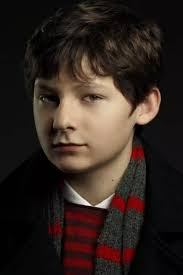
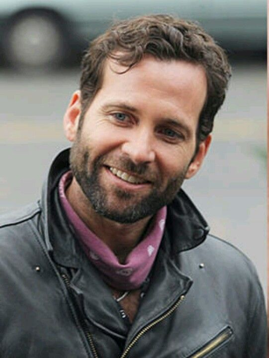
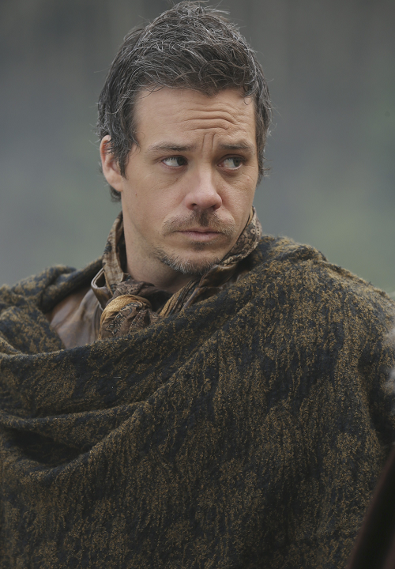
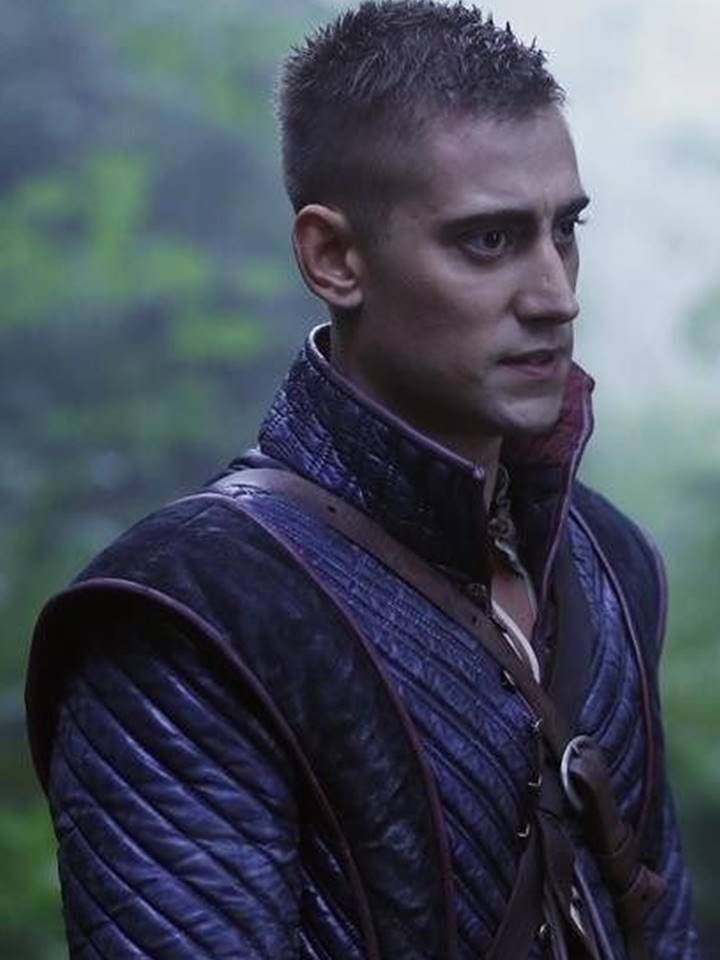
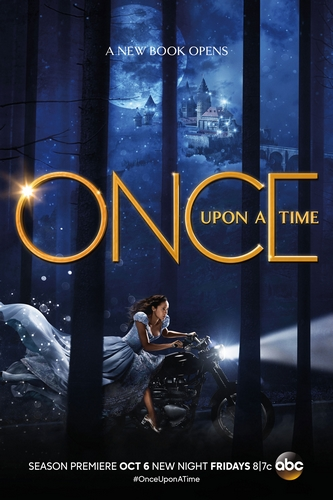

- Sobre
- Elenco
- Branca de Neve
- Emma Swan
- Rainha Má
- Príncipe Encantado
- Henry Mills
- Grilo Falante
- Caçador
- Rumplestiltskin - Crocodilo - Fera
- Pinóquio
- Bela
- Chapeuzinho Vermelho - Lobo
- Capitão Gancho
- Baelfire
- Valete de Copas
- Bruxa Má do Oeste
- Robin Hood
- Cinderela
- Temporadas
- Curiosidade
- Contato
Sobre
Antes Primeira Maldição
Os pais de Emma, Branca de Neve e Principe Encantado, são habitantes da Floresta Encantada. No dia em que iam se casar, a Rainha Má anuncia que irá destruir a felicidade de todos no reino. Meses mais tarde, quando Branca de Neve está grávida, ela pergunta a RumpNo entanto, Gepeto só aceita fazer o guarda-roupa se seu próprio filho, Pinóquio, for uma das duas pessoas salvas da maldição. A Fada Azul aceita suas exigências, e conta a Branca e Encantado que o guarda-roupa só podia proteger uma pessoa. Branca de Neve grávida, se prepara para ir sozinha no guarda-roupa, mas ela acaba dando à luz mais cedo, no mesmo dia em que a maldição é lançada. Devido a isso, a Fada Azul pede a Gepeto que permita que Branca de Neve e sua filha vá juntas no guarda-roupa, mas ele ignora as palavras dela e envia Pinóquio para uma Terra sem Magia. Depois de ser ferido mortalmente por cavaleiros da Rainha, o Príncipe Encantado coloca a bebê Emma no guarda-roupa, e ela escapa. Na Terra sem Magia, fora de Storybrooke, [1] Pinóquio pega Emma, e os dois são posteriormente colocados em um lar adotivo juntos. Pinóquio, em seguida, a abandona e Emma acaba crescendo sozinha. ("Pilot", "The Stranger")
Durante a Primeira Maldição
Crescendo no sistema de adoção, Emma vive em várias famílias. Aos três anos de idade, ela é adotada por um casal de pais adotivos que a abandonam quando tem um bebê biológico. ("Pilot")
No ano de 1989, Emma e algumas crianças vão a um cinema em Minnesota para assistir ao filme da Disney, A Espada era a Lei. Lá Emma rouba uma barra de chocolate Apollo de uma mulher, e quando ela se senta, um funcionário diz a ela para não fazer "isso". Ela começa a se desculpar por ter roubado, mas ele se refere a outra coisa, e a adverte a não fazer nada, mesmo que seja pelos os motivos certos, pois coisas ruins vão acontecer. Ele diz que ela terá a chance de tirar a espada da pedra um dia, mas que ela nunca deverá fazê-lo. Depois de dar-lhe a mensagem, ele desaparece. ("The Dark Swan")
Emma com onze anos de idade, vive em um lar adotivo em Boston. Um dia, ela e as outras crianças veem uma menina, Cecilia ir embora de carro depois de ser adotada. Enquanto o veículo se afasta, Emma continua a olhar ansiosamente para ela, desejando uma família. ("Snow Drifts", "Breaking Glass")
Achando que nunca será adotada, Emma pega um ônibus para Minnesota. Em Hopkins, ela entra em uma loja e tenta roubar comida. Lá, ela percebe que uma menina, Lily, está olhando para ela, mas ela logo some. Depois de esconder uma caixa em sua jaqueta, Emma começa a ir embora, mas uma segurança da loja a impede. Antes que a mulher faça alguma coisa, Lily se aproxima com um carrinho; agradecendo a Emma por esperar por ela e mostra que tem um cartão para pagar pelas compras. Aliviada por não ser pega roubando, Emma agradece a Lily e quase vai embora, no entanto esta pede que ela fique e faça compras com ela. Após pagarem as coisas na loja, Lily avista um homem em um carro a persegui-las, mas elas escapam por um beco. Perto de um lago, as meninas tiram a comida das sacolas e fazem um piquenique. Emma conta o motivo de ter ido a Minnesota, e Lily compartilha sentimentos semelhantes de se sentir invisível para o mundo. Equivocadamente, Emma acha que o homem no carro é um assistente social tentando levar Lily de volta para o lar adotivo. Lily, no entanto, tem outros planos e aponta uma casa do outro lado do lago, que está vaga durante a temporada de outono. Ela sugere ir pra lá, e Emma aceita alegremente. Dentro da casa, enquanto jogam vídeo game, Emma vê uma estrela no pulso de Lily. Lily imagina que o desenho a torne especial, e desenha uma estrela no pulso de Emma. Ao encontrarem uma câmera, elas começam a se filmar fazendo brincadeiras. Emma e Lily prometem continuarem amigas, não importa o quê aconteça. Naquela noite, o mesmo homem que as perseguiu antes, chega na casa. No início, Emma diz que elas não vão voltar para o sistema de adoção, mas ela acaba descobrindo que ele é o pai de Lily. Quando a polícia aparece, Lily dá informações de contato para Emma, prometendo fugir juntas. Lily confessa que embora tenha mentido sobre sua família, todo o resto é real pois foi adotada e sua vida em casa é ruim. Magoada pelas mentiras, Emma vai embora. Ela apaga a estrela de seu pulso, enquanto Lily repetidamente chama o nome dela. ("Breaking Glass")
Depois disso, Emma vai viver com pais adotivos em Mankato, uma família que já têm dois filhos. Enquanto se prepara para fazer sua primeira viagem de acampamento, ela procura na garagem seu saco de dormir, e descobre que Lily está se escondendo lá. O pai adotivo de Emma as vê, Lily diz que sua família adotiva acabou de se mudar para o bairro, ela acaba sendo convidada para o jantar. Durante a refeição, Lily mente sobre como ela e Emma se conheceram, enquanto a segunda fica chocada com tantas mentiras. Elas conversam na cozinha, Lily tenta-se desculpar com Emma, quando elas assistem pelo o noticiário que uma loja foi roubada, e Emma reconhece a amiga como um dos assaltantes. Emma que ela vá embora, mas Lily se recusa a ir sem recuperar seu colar de lua crescente, que está em uma casa abandonada na qual vivia. Emma vai até lá, pega o colar e volta para casa. Ao retornar, seus pais adotivos a confrontam sobre Lily, que roubou dinheiro e desapareceu. Eles descobrem, depois de alguns telefonemas, que sua amiga é agora procurada por roubo. Emma admite saber disso e de ter solicitado que Lily fosse embora por causa disso, mas seu pai adotivo a critica por permitir que um criminoso ficasse perto de seus filhos. Triste por ouvir isso, Emma pega sua mochila e vai embora. Ela vai até um ponto de ônibus e encontra com Lily. Emma culpa a amiga por arruinar sua chance de ter uma família, lhe devolve seu colar e diz que vai embora. Lily, no entanto, quer ficar com ela, pois considera Emma como sua única fonte de luz no meio de toda a escuridão em sua vida. Emma friamente afirma que prefere ficar sozinha e vai embora. ("Lily")
Emma vai para um lar adotivo em Richfield, Minnesota. Ela mantem sua câmera velha, bem como as filmagens de seu tempo com Lily. Outra criança da casa, Kevin, agarra a câmera e começa a brincar com ela, sem perceber que estava gravando. Quando Emma grita com ele para lhe devolver, sua nova mãe adotiva Ingrid, manda que ele devolva a câmera. Depois de Ingrid sair, Kevin ameaça Emma para que ela lhe entregue a câmera, ou ele irá fazer da vida dela um inferno. Ela tenta fugir naquela noite, mas Ingrid a convence a ficar, revelando o medo de Kevin de aranhas e que em sua mesa ela tinha algumas de borracha. Percebendo que Ingrid está a ajudando, Emma concorda em ficar. ("Breaking Glass", "Shattered Sight")
Algum tempo depois, Ingrid leva Emma para um parque, onde ela inconscientemente mostra seus primeiros sinais de magia, enquanto tenta pegar um bichinho de pelúcia em uma máquina. Depois de vencer, Ingrid afirma que Emma é uma garota especial e que ela um dia vai surpreender a todos com seus "dons extraordinários". Vendo alguns papéis de uma agência na bolsa de Ingrid, Emma acha que será devolvida de novo. No entanto, Ingrid felizmente admite que está adotando ela. Ela diz que mesmo que Emma nunca a veja como mãe, ela se contenta em ser uma irmã mais velha. Enquanto esperam pelo o ônibus juntas, Emma sugere que seria legal ter poderes mágicos que pudesse lhe teletransportar para casa. Ingrid lembra de como a máquina de bichos de pelúcia piscou e diz que não foi um acidente, mas Emma apenas dá de ombros. Sabendo do potencial da menina, Ingrid a coloca na frente de um carro de estrada, mandando que ela pare o carro com magia, porém Emma fica muito assustada e foge pela a calçada. Ingrid tenta mostrar que tem pontos em comum com Emma, contando quando descobriu ter poderes. Entretanto Emma acredita que Ingrid é louca, foge e nunca retorna. ("Shattered Sight")
Aos dezessete anos, Emma arromba um carro em Portland, Oregon. Lá encontra um homem, Neal que também está tentando roubar o veículo. Neal os leva a um parque de diversões fechado, onde Emma descobre que ele já teve um lar, mas fugiu por que que seu pai mudou muito. Eles começam a namorar e fazer pequenos assaltos. Vestindo uma barriga falsa de grávida, Emma rouba itens de uma loja de conveniência, enquanto Neal distrai o dono da loja. Quando eles são entregues por um cliente, Emma finge sentir dores de parto. Enquanto eles saem apressadamente, Neal rouba um chaveiro de cisne para ela. A dupla vai para um hotel, e Neal permite que ela para escolha um lugar para viverem juntos, Emma escolhe Tallahassee. Mais tarde, Neal admite ser procurado por roubar relógios e faz planos de fugir para o Canadá sozinho. Emma propõe buscar os relógios roubados onde ele deixou, e vendê-los para que possam viver juntos. Neal inicialmente é contra, mas acaba aceitando. O plano dá certo, e Emma entrega os relógios pra Neal. Eles se separam, mas não sem antes ele pegar um dos relógios e colocar no pulso dela, ele sai pra vender a mercadoria, enquanto ela aguarda por ele. Ao esperar no ponto de encontro, Emma acaba presa por posse de produtos roubados, o próprio Neal a denuncia, para desgosto dela. Ela é enviada para uma prisão de segurança mínima em Phoenix, onde cumprirá pena por onze meses. Alguns meses depois, Emma observa o resultado positivo de um teste de gravidez, quando ela recebe pelo o correio um pacote de Phuket, Tailândia, contendo as chaves de um automóvel com o chaveiro de cisne. ("Tallahassee", "There's No Place Like Home")
Em algum momento durante a sua gravidez, ela decide dar o bebê para adoção. No dia em que Emma entra em trabalho de parto e o bebê nasce, ela luta contra o seu desejo de ficar com a criança. Embora tentada a mudar de ideia, Emma acredita que não está pronta para ser mãe. ("The Heart of the Truest Believer")}
Uma década mais tarde, Emma trabalha como agente de fiança em Boston. No dia de seu aniversário, ela persegue um fugitivo chamado Ryan. Depois de entregá-lo para as autoridades, ela volta para seu apartamento e acende uma velinha pelo o seu vigésimo oitavo aniversário. Ela deseja não ficar sozinha em seu aniversário, e nesse momento um menino chamado Henry, bate em sua porta afirmando ser o filho que ela deu para adoção há dez anos. Ela entra em pânico e foge para o banheiro, mas retorna para ameaçar Henry dizendo que irá chamar a polícia, mas ele promete dizer que ela o sequestrou. Ela lhe conta sobre seu superpoder que detecta qualquer mentira, o que leva Henry a interceder para que ela volte para casa com ele em Storybrooke, Maine. Durante a viagem de carro, ele explica sobre a Maldição das Trevas que prendeu todos os personagens de contos de fadas na cidade. Ele afirma que cada história de seu livro é verdadeira e até mesmo ela está nele, mas Emma não acredita. Ao chegar a cidade, Henry se recusa a dar o endereço dele, nesse momento seu terapeuta Archie Hooper aparece e fornece o endereço a ela. Henry afirma que Archie é o Grilo Falante e todos na cidade são da Floresta Encantada. Depois de levá-lo para casa, a mãe adotiva de Henry, Regina a convida a beber cidra da maçã. Emma tranquiliza Regina dizendo não será um problema, especialmente o pai que não sabe da existência de Henry. Emma faz um comentário sobre o livro de contos de fadas de Henry, embora Regina não tenha conhecimento de nada disso. Quando Emma se afasta da casa, ela vê Henry olhando para ela da janela de seu quarto. Em seu carro, indo embora da cidade, ela percebe que ele deixou seu livro sobre o banco do carro. Quando ela olha para frente e tenta voltar para a casa de Regina e vê um lobo que de repente aparece na estrada, ela tenta desviar o carro, bate na placa da cidade e fica inconsciente.Quando Emma acorda e está presa.Depois que ela percebe que o lobo era uma atração para voltar a Storybrooke.
< Voltar >
Elenco
- Ginnifer Goodwin como Branca de Neve / Mary Margaret Blanchard

- Jennifer Morrison / Emma Swan

- Lana Parrilla como Rainha Má / Regina Mills

- Josh Dallas como Mendigo / Príncipe Encantado / David Nolan

- Jared S. Gilmore como Henry Mills

- Raphael Sbarge como Grilo Falante / Dr. Archibald Hopper

- Jamie Dornan como Caçador / Xerife Graham Humbert

- Robert Carlyle como Rumplestiltskin / Crocodilo / Fera / Sr. Gold

- Eion Bailey como Pinóquio / August Wayne Booth

- Emilie de Ravin como Bela / Lacey
- Meghan Ory como Chapeuzinho Vermelho / Lobo / Ruby

- Colin O'Donoghue como Killian Jones / Capitão Gancho / Roger

- Michael Raymond-James como Baelfire / Neal Cassidy

- Michael Socha como Will Scarlet / Valete de Copas / Rei Branco

- Rebecca Mader como Zelena / Bruxa Má do Oeste / Kelly West

- Sean Maguire como Robin Hood

- Dania Ramirez como Cinderela / Jacinda Vidrio

< Voltar >
Temporadas
- Temporada 1
-
- A série começa com o Príncipe Encantado salvando a Branca de Neve da maldição do sono e, na cena seguinte, a Rainha Má interrompe o casamento dos dois, anunciando que ela planeja destruir a felicidade de todos lançando uma maldição sobre todos do reino, que os levará a um lugar onde só ela terá um "final feliz". A maioria dos personagens de contos de fadas são transportados para a cidade de Storybrooke, onde eles foram despojados de suas memórias e identidades reais, além do congelamento, onde todos fazem todo dia a mesma coisa sem um motivo claro. Em seu aniversário de 28 anos, Emma Swan é levada até Storybrooke por Henry Mills, seu filho que dera para a adoção ainda bebê, na esperança de quebrar a maldição lançada por Regina Mills (sua mãe adotiva), a prefeita da cidade.

- Temporada 2
-
- Apesar de Emma ter quebrado a maldição, nenhum dos personagens voltam para a Floresta Encantada, ficando com suas memórias reais. Agora, todos tem que lidar com suas próprias identidades duplas, e com a introdução da magia em Storybrooke, o que torna os destinos dos dois mundos interligados, o que traz novas ameaças. Somos apresentados a dois novos vilões, o Capitão Gancho e a mãe de Regina, Cora, também conhecida como Rainha de Copas. Dois agentes do nosso mundo também se infiltram em Storybrooke, com a missão de destruir a magia. Somos apresentados a Neal Cassidy / Baelfire, o pai biológico de Henry e filho de Rumplestiltskin.

- Temporada 3
-
- Os personagens tentam resgatar Henry das garras de Peter Pan na Terra do Nunca, que tem o plano de roubar o coração de Henry para colocar em si mesmo e se tornar imortal. A crescente luta de poder com Pan continua em Storybrooke, o que acaba resultando na reversão completa da maldição de origem. Todos os personagens são devolvidos para a Floresta Encantada, deixando Emma Swan e Henry para trás em Nova York com suas memórias apagadas. Mais tarde, os personagens são misteriosamente trazidos de volta para Storybrooke, mas tiveram suas memórias do ano anterior removidas, e a Bruxa Má do Oeste / Zelena, de Oz, aparece, planejando uma viagem no tempo para mudar seu passado. Então, mais uma vez, Emma é necessária para salvar a sua família. Conhecemos personagens marcantes em nossa infância, como Sininho, a família Darling e Peter Pan, além de outros personagens como Robin Hood e Roland. Princesa Isabel

- Temporada 4
-
- Eventos recentes trazem Elsa até Storybrooke, após a abertura da urna onde ela estava presa ser acidentalmente sugada para dentro do portal. Ao chegar a Storybrooke, Elsa procura por sua irmã Anna com a ajuda de vários personagens, mas em meio à busca acaba encontrando-se a mercê de um plano da Rainha da Neve. Enquanto isso, Regina procura o autor do livro Once Upon a Time de Henry, para que ele possa finalmente dar a ela seu final feliz. No entanto, Gold, com a ajuda de Cruella De Vil, Malévola e Úrsula, tem seus próprios planos para reescreverem as regras que regem os destinos dos heróis e vilões.no final eles conseguem encontrar Ana. Finalmente malévola consegue encontrar sua filha, e descobre que Emma já foi amiga dela mas a abandonou quando criança.

- Temporada 5
-
- Os personagens embarcam em uma missão para Camelot tentando encontrar Merlin, a fim de libertar Emma dos poderes das trevas. Para complicar a situação, o Rei Artur está determinado a alterar o equilíbrio entre a luz e as trevas usando a lendária espada Excalibur. Quando a história e o destino se colidem, consequências inusitadas levam os personagens para o Submundo à procura de salvar a alma perdida de um amigo, onde encontram também as almas daqueles com negócios inacabados e enfrentam um novo vilão, Hades, que pretende prender os heróis em seu domínio para sempre. Reencontramos alguns personagens antigos, como Peter Pan, Cora, Liam Jones, Neal Cassidy, Cruella, James, Mulan, Ruby, Dorothy, e muitos outros.

- Temporada 6
-
- A cidade de Storybrooke está ameaçada pelo alter-ego agora dividido do Dr. Jekyll, o Sr. Hyde, que junto com seus companheiros da Terra das Histórias Não Contadas, lutarão para derrubar os heróis. Após sua falha tentativa de se livrar de seu lado mal, Regina terá de lidar também com a sua auto personificação, a Rainha Má, que foi separada de si e deseja vingança contra os heróis.
- Temporada 7
-
- Em maio de 2017, a série foi renovada para uma sétima temporada contendo 22 episódios, marcando o início de uma reinicialização. A temporada se passa anos depois, em Seattle, Washington, onde Lucy chega com seu livro de contos de fadas para encontrar seu pai, Henry Mills, cuja família está precisando de sua ajuda.Em fevereiro de 2018, foi anunciado que a sétima temporada seria a última temporada da série.

< Voltar >
Curiosidade
James Whale, o nome pós maldição de Doutor Frankenstein na trama, é uma homenagem ao diretor americano dos filmes do monstro: Frankenstein (1931) e, a sequência, A Noiva do Frankenstein (1935).
Por ser um personagem preso em mundos paralelos, o rosto por de trás do espelho da Rainha Má recebeu o nome de Sidney Glass. O primeiro nome é um referência ao criador de Jeannie , é um Gênio, Sidney Sheldon.
No latim, o nome Regina tem o significado de “rainha”.
Em diversas cenas da primeira temporada, Mr. Gold está usando uma aliança de casamento. Robert Carlyle, que é casado, esqueceu de retirar o anel durante as gravações.
A atriz Katee Sackhoff, conhecida por Battlestar Galactica, foi chamada para cinco testes do papel de Emma Swan. Mas foi Jennifer Morrison que ficou com a vaga.
Ginnifer Goodwin e Josh Dallas se conheceram durante as filmagens da série. O romance deve acabar em casamento, já que os atores anunciaram o noivado publicamente neste ano. Entrevista
Jorge Garcia e Jennifer Morrison já trabalharam juntos em How I Met Your Mother.
As semelhanças com Lost não são coincidências. Kitsis e Horowitz foram os principais produtores da série de ficção.
O nome Mary Margaret é de uma mulher real, que acreditava-se ser a inspiração para história de Branca de Neve. Ela nasceu na Alemanha em 1729. Saber mais ...
Peter Pan e Gancho são grandes inimigos, no entanto, o ator Colin O’Donoghue diz que o conto do garoto perdido é o seu predileto.
< Voltar >
Contato
Mande um email para entrar em contato conosco!!
Mandar email
< Voltar >
- Branca de Neve
- Emma Swan
- Rainha Má
- Príncipe Encantado
- Henry Mills
- Grilo Falante
- Caçador
- Rumplestiltskin - Crocodilo - Fera
- Pinóquio
- Bela
- Chapeuzinho Vermelho - Lobo
- Capitão Gancho
- Baelfire
- Valete de Copas
- Bruxa Má do Oeste
- Robin Hood
- Cinderela